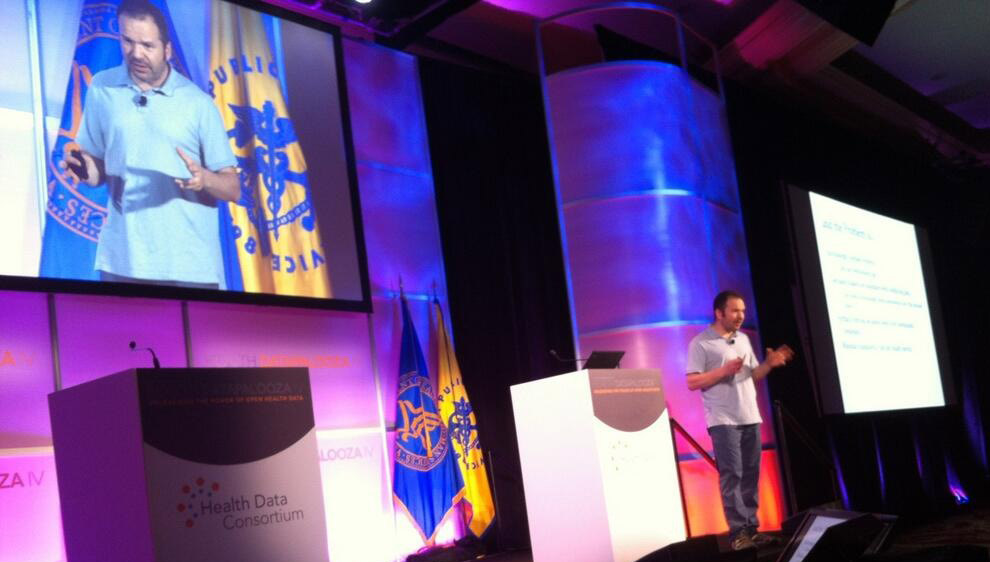

Life first. Health a distant second.
by Juhan Sonin, juhan@goinvo.com
Remember doctor's visits when you were growing up? The wooden tongue depressor. The well-worn stethoscope. That weird thing they jammed in your ears. And now, my young children are getting about that same treatment. But that is going to change.
As design harnesses digital, materials and networking technologies, a very new health experience is just over the horizon. Proactive, lifestyle design. Tracking real-time health data. Non-invasive tools. Custom "just for you" treatments based on your actual genome. These are all real technologies, being used by ordinary people. Together they are leading us to "stage zero" detection and treatment which has the potential to double or better the lifespan of every first-world citizen. Not science fiction, the children of the 2020's will only know this reality. Tongue depressors will be limited to school craft projects and popsicles. And it is all the product of technology and design.
Design is Medicine introduces participants to the macro factors shaping these realities, along with an in-depth exploration of the various impacts of and opportunities for design.

Juhan Sonin is the Creative Director of Involution Studios and has produced work recognized by the New York Times, Newsweek, BBC International, Billboard Magazine, and National Public Radio (NPR). He has spent time at Apple, the National Center for Supercomputing Applications (NCSA), and MITRE. Juhan lectures on design and engineering at the Massachusetts Institute of Technology (MIT).
For Press Inquiries, Speaking Engagements, Greetings, write to juhan@goinvo.com.